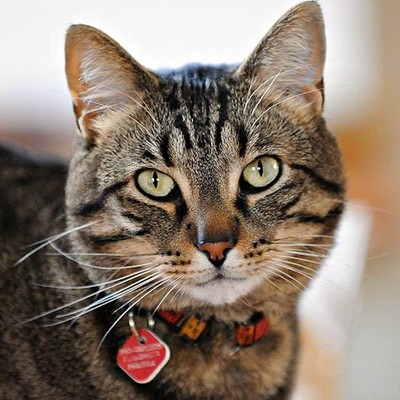
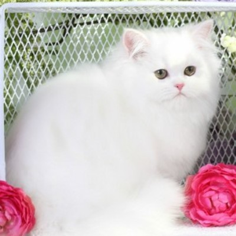
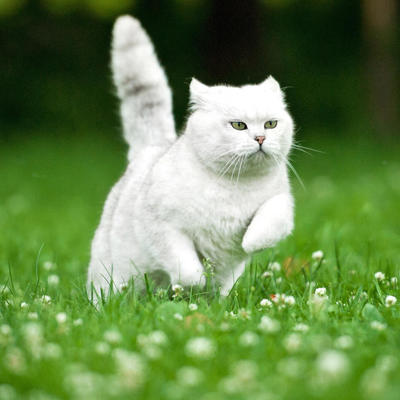
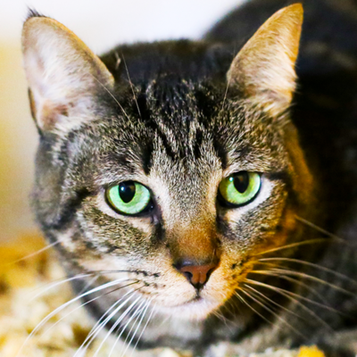

Buttercup
Buttercup is a kitten that was rescued from the side of a road. We saw him while we driving down a road, took him in, and named him after our favorite candy! We gave him one, and he loved it! He got chocolate everywhere! He loves to cuddle with our customers, especially if they have some spare peanut butter cups. He has been known around New York as a loving cat.

Cookie
This is Cookie. Cookie was rescued from a swimming pool that was 6 feet deep, and completely empty. There was a drought in the area at the time. Cookie was stuck in the pool for over 3 days! He had no food, or water during that time. Whenever we found him, we immediately gave him the only thing we had at the time, a pack of cookies and a some water. He devoured that pack of cookies, and that is why we call him Cookie. He has been known as a tough cat who makes friends easily and loves cookies.

Snowball
This is Snowball. Snowball was found buried under a lot of snow, the only sign that she was there, were her two pointed ears. When we picked her up, She was white as snow, and she was freezing. So we brought her inside and warmed her up. We call her snowball because whenever we picked her up, she looked like a huge snowball! Since then, we have called her such. She has been known to love going outside and play in the snow during the winter.

Daisy
This is Daisy. Daisy was rescued from the middle of a huge corn field. We call her Daisy because she loves the outdoors. The reason she got stuck in a corn field is because she was in a house, but she wanted to go outside in the sun. She then escaped the house to go into the corn field, then got lost. We asked the original owner if they would allow us to give her a wonderful life at the Cat Cafe. They said yes but they wanted to be able visit her when they visit the Cat Cafe. Our Cafe, placed in Central Park is purr-fect for Daisy as she can go right outside to bask in the sun.

Bubbles
This is Bubbles. Bubbles was rescued from a beach outside of New York City, which was full of sea foam. Bubbles loved playing in the foam and we took him back, bathed him, and gave him some food and water. Bubbles loves bath time because it means he gets to play with his favorite thing, bubbles.